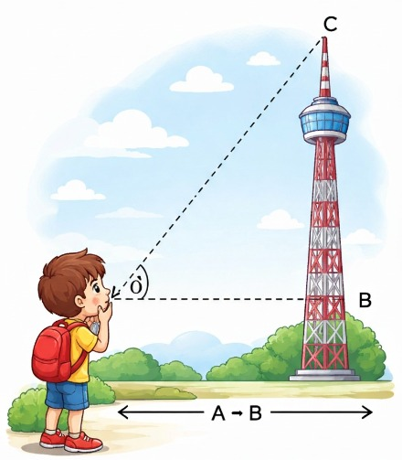

මේ රූපයේ ගොඩනැගිල්ලේ උස(B-C) මනින්ඩ අපිට ඕනැ A-B දුර සහ Ò කෝණයේ අගය විතරයි.
මේක පැහැදිලි කරගන්න පහල තියන ත්රිකෝණයේ වෙනස් වීම බලන්න. ත්රිකෝණය කොච්චර විශාල උනත් පාද අතර අනුපාත වෙනස් වෙන්නේ නෑ. උදා:සම්මුඛ පාදයේ දිග බද්ධ පාදයේ දිගෙන් බෙදුවොත් හැම වෙලේම නියත අගයක්
මේ නියතය වෙනස් වෙන්නෙ ත්රිකෝණයේ හැඩය වෙනස් උනොත් විතරයි. කෝණය වෙනස් කරලා ඔයාටම ඒක බලන්න පුලුවන්.
ඉතින් මේ ත්රිකෝණය ඉහත ගොඩනැගිල්ලේ මුදුන දක්වාම විශාල උනා කියලා හිතන්න. එතකොට ඒ ත්රිකෝණයේ සම්මුඛ පාදය වෙන්නේ ගොඩනැගිල්ලේ උසයි. අපි ඒ උස දැනගන්න අනුපාතයට බද්ද පාදයේ දිග ආදේශ කරන්න විතරයි තියෙන්නේ.
බද්ධ පාදයෙ එනම් ලමයා සහ ගොඩනැගිල්ල අතර දිග මීටර් 200ක් උනොත් සහ කෝණය 30 නම්. ගොඩනැගිල්ලේ උස \(x\) සෙවීමට
මෙතනදී අපිට වැදගත් බද්ධ පාදය හා සම්මුඛ පාදය නිසා එම අනුපාතය එනම් Tan ගන්න ඕනැ.Sin,Cos අනුපාත දෙකටම ත්රිකෝණයේ කර්ණයත් සම්බන්ධ නිසා ඒ දෙක ගන්න බෑ මේ ගැටලුවට
\(\tan 30^\circ\) යනු ඉහල ඉගෙගත් ආකාරයට 0.577
$$0.577 = \frac{x}{200}$$ $$x = 0.577 \times 200$$ $$x = 115.4 \text{ m}$$පිළිතුර: සම්මුඛ පාදයේ දිග මීටර් 115.4 කි.
අංශක 65ක කෝණයකින් ඉහල ගිය සරුංගලයක් නූල මීටර් 100ක් නම් පොලොවේ ඉඳන් සරුංගලය කොච්චර උසකින් තියනවාද ගනනය කරමු.
අප සතු දත්ත:
අගයන් ආදේශ කිරීම (\(\sin 65^\circ = 0.9063\)):
$$0.9063 = \frac{h}{100}$$ $$h = 0.9063 \times 100$$ $$h = 90.63 \text{ m}$$අඩි 10ක් පලල ස්තෝප්පුවට අංශක 25ක හැඩයට වහලයක් හදන්න ඕනැ කරන ශීට් වල දිග මනිමු
අප සතු දත්ත:
අගයන් ආදේශ කිරීම (\(\cos 25^\circ = 0.9063\)):
$$0.9063 = \frac{10}{x}$$ $$x = \frac{10}{0.9063}$$ $$x = 11.03 \text{ ft}$$